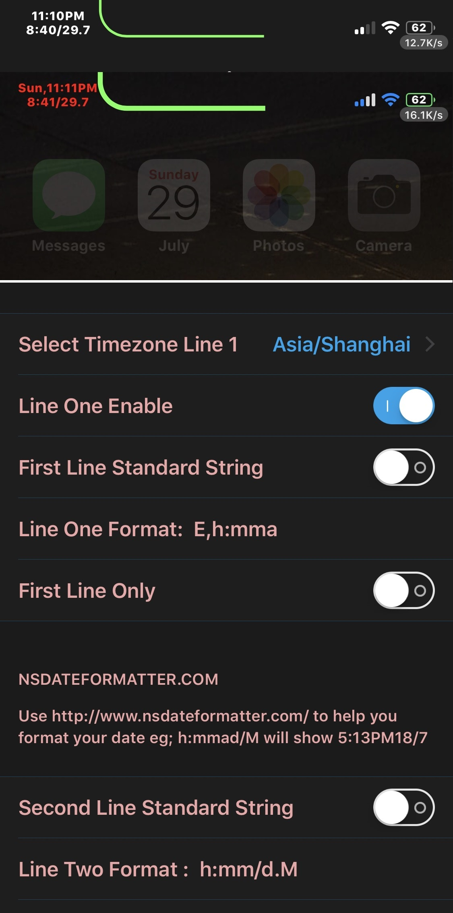
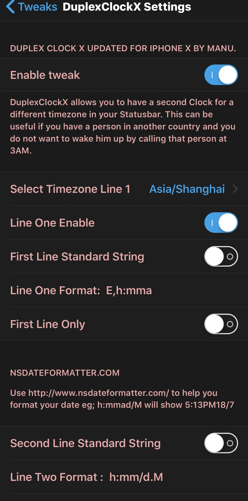
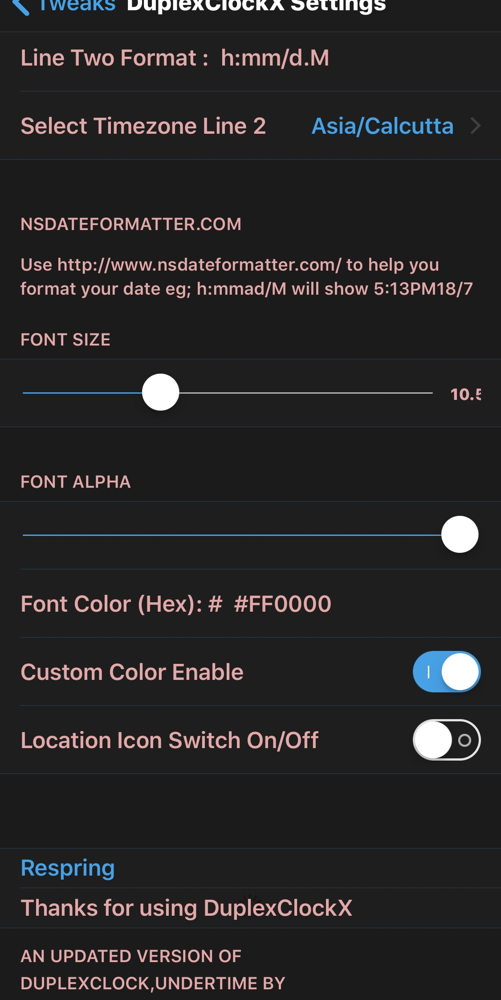

Modify Your Clock from setting with Dual Timezone change Supports & Other settings.Prefrence Setting have some minor issue
Added seconds in time,It may effect minor battery
Go to http://www.nsdateformatter.com/ for more date time format settings.
A forked updated version of DuplexClock & Undertime by Routine,gilshahar7,MPG13 & NeinZedd9 for iPhone X forked by Manu,Thanks to All
Note:Tweak Enable on/off & 1st respring & uicache if color not update



